扉页
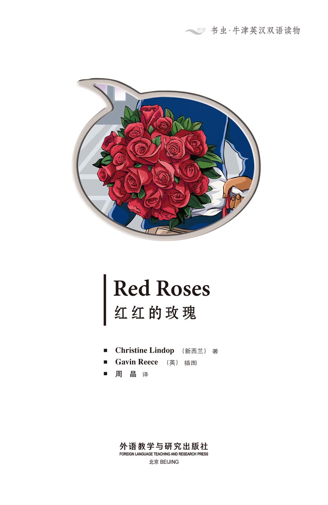
版权页
京权图字：01-2013-7807
Published by arrangement with Oxford University Press for sale in the People's Republic of China only and not for export therefrom. This edition is for sale in the mainland of China only, excluding Hong Kong SAR, Macao SAR and Taiwan.
© Oxford University Press 2008
Oxford is a registered trademark of Oxford University Press
图书在版编目（CIP）数据
红红的玫瑰：英汉对照／（新西兰）林多普（Lindop, C.）著；（英）里斯（Reece, G.）绘；周晶译．—北京：外语教学与研究出版社，2013.11
（书虫·牛津英汉双语读物）
书名原文：Red roses
ISBN 978-7-5135-3779-7
Ⅰ．①红… Ⅱ．①林…②里…③周… Ⅲ．①英语—汉语—对照读物②短篇小说—新西兰—现代 Ⅳ．①H319.4：I
中国版本图书馆CIP数据核字（2013）第272359号
出版人： 蔡剑峰
责任编辑：文雪琴
封面设计：蔡 颖
出版发行：外语教学与研究出版社
社 址：北京市西三环北路19号（100089）
网 址：http://www.fltrp.com
版 次：2013年12月第1版
书 号：ISBN 978-7-5135-3779-7
制售盗版必究 举报查实奖励
版权保护举报电话：（010）88817519
内容简介
内容简介
哪里都有漂亮的姑娘，笑容迷人的小伙子也不稀奇。每一座大城小镇都有年轻男女在一瞥一笑间互相吸引。他们就这样相遇，相识，畅谈，欢笑……多么美妙的日日夜夜，这就是爱的魔力。
威尔看见了安娜，她是个漂亮的姑娘，他想认识她，可是要怎么做呢？他能听到她的吉他声，却找不到她的身影。
安娜看见了威尔，她也想认识他，但是他在哪里？她能闻到他留在电梯里的玫瑰花香，可是他去了哪里？
安娜的朋友薇姬想帮她。威尔的奶奶也想帮他。可是一切的努力都没有结果。安娜和威尔能再次相遇吗？让他们互相吸引的是爱吗？
RED ROSES
RED ROSES
There are pretty young women everywhere. And there are young men with nice smiles. In every town, in every city, young men are looking at young women, and young women are smiling at them. They look, they meet, they talk, they laugh... happy days, sweet nights – it's love.
Will looks at Anna. She is a pretty young woman, and he wants to meet her. But how? He can hear her guitar, but he cannot find her.
Anna looks at Will. She wants to meet him too. But where is he? She can smell his roses in the elevator, but where does he go?
Anna's friend Vicki wants to help. Will's gran wants to help. But nothing happens. Can Anna find Will? Can Will meet Anna? Is it love?
目录
1 White roses
1
White roses
It's August. Anna is playing her guitar on the balcony of her new apartment. 'I like it here,' she thinks.
Then her phone rings. It's her friend Vicki.
'I'm coming now, Anna. It's Grandview Apartments, Charlton, isn't it?'
'That's right. See you soon.'
Anna takes her guitar and goes out of her apartment. She goes down in the elevator and goes outside.
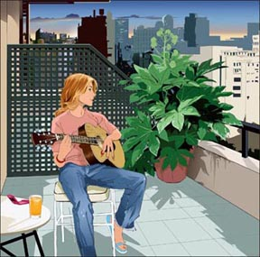
Anna is waiting outside the apartment building.
A young man is walking along the street. He is carrying a bunch of white roses.
Anna looks at them. 'What beautiful roses!' she thinks. Then she looks at the young man. 'He's nice too!' she thinks.
The young man looks at her and smiles, and suddenly Anna's face is pink.
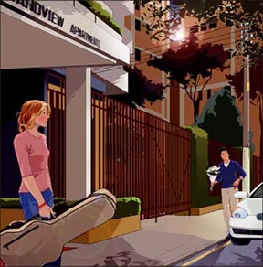
Will is walking along the street, when he sees a young woman with a guitar.
'Hmm – a guitar!' he thinks. 'I must play my guitar more often.'
Then he looks at the young woman.
'She's nice!' he thinks, and he smiles at her.
Anna's face is pink, and she looks away. Will goes into Grandview Apartments.
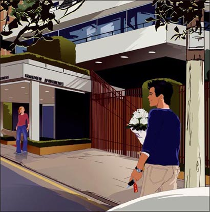
Just then, Vicki arrives in her car.
'Hello, Anna,' she says. 'Are you OK? Your face is a bit pink. What's the matter?'
'Oh – er – nothing,' says Anna.
They drive away. Vicki talks to Anna, but Anna is thinking about the young man.
'Who is he?' she thinks. 'Does he live in the building? Who are the roses for? His wife? His girlfriend? His mother?'
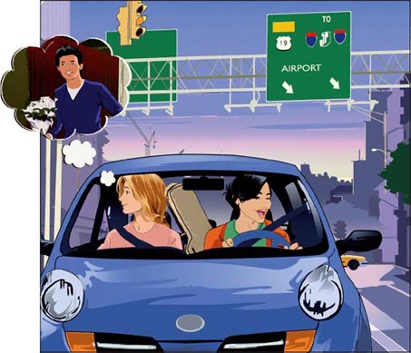
'Anna? Are you listening?' says Vicki.
'Oh! Sorry, Vicki,' says Anna. Her face is red now.
'What are you thinking about?' says Vicki. 'Tell me!'
'Well, I'm thinking about a bunch of roses,' says Anna. 'And a man.'
'Aha! Who is he?' says Vicki.
'I don't know,' says Anna.
'But I want to know,' she thinks.
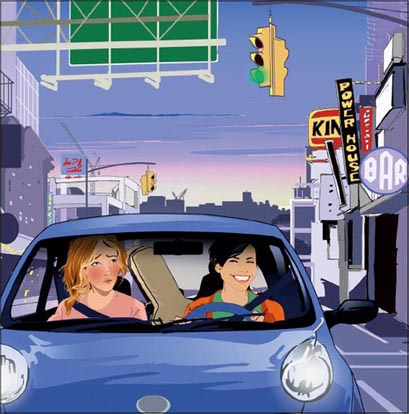
Will arrives at his gran's apartment.
'Hello, dear,' she says. 'Oh, you are a good boy. You always bring me roses.'
'Of course,' says Will.
Gran makes Will some coffee. She asks him a question, but Will does not answer.
'Will, are you listening? You're thinking about something, aren't you? What is it?'
'Oh – sorry, Gran. It's – it's not important.'
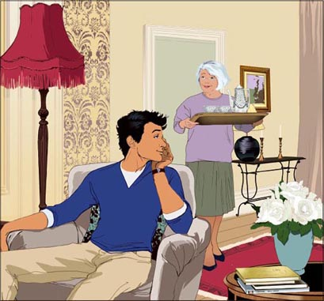
Later, Will says goodbye to his gran. Then he gets into his car and drives away.
In the car he thinks about the young woman with the guitar.
'Where does she live?' he thinks. 'Does she live in one of the apartments? Or has she got a friend there? How can I meet her? Who is she?'
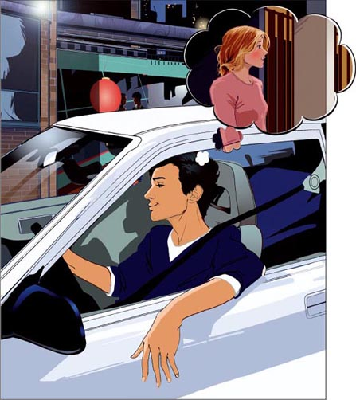
Five minutes later, Anna and Vicki arrive outside the apartment building.
'Goodnight, Vicki,' says Anna.
'Quick – go inside,' says Vicki. 'Just think – you walk out of the elevator, and there is a young man with a bunch of roses. And he says—'
'Oh be quiet,' laughs Anna. 'See you tomorrow.'
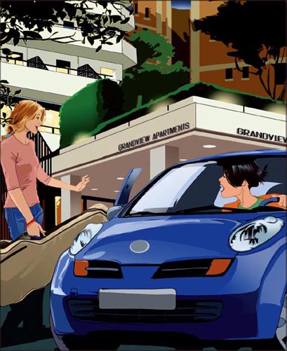
2 Pink roses
2
Pink roses
It's September. Will is visiting his gran again.
'It's a lovely day, Will,' she says. 'Let's have our coffee on the balcony.'
Will and his gran are sitting on the balcony in the sun, when suddenly Will hears a guitar.
'Listen!' he says. 'That's a guitar. Where's it coming from?' He stands up and looks around, but he cannot see the guitar.
'Excuse me, Gran,' he says. 'I – er – back soon!' And he runs out of the apartment.
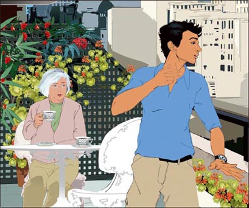
Will runs along the corridor. Where is the guitar? And who is playing it?
He stops outside an apartment and listens. Nothing.
'Perhaps it's outside,' he thinks. 'Perhaps she's on her balcony.'
So he goes down in the elevator and goes outside.
Upstairs, Anna takes her guitar and goes inside. She closes the door to the balcony.
'That's it for today,' she thinks.
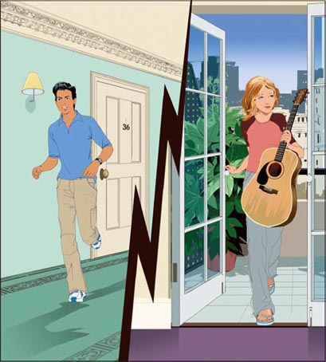
Will looks at all the balconies, but he cannot see or hear a guitar.
He goes back to his gran's apartment.
'Are you all right, dear?' she says.
'Yes thanks, Gran,' says Will. 'It's just – oh, it's not important. Well, it is important, but...'
And Will tells Gran about the girl with the guitar.
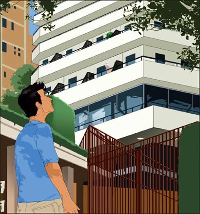
A week later, Anna is coming home. She can see a young man near the apartment building, and he is carrying a bunch of roses – pink roses today. But he is not looking, and he does not see her.
Anna walks more quickly. But when she gets to the building, there is nobody there.
She gets into the elevator. There is nobody in the elevator, but she can smell roses – beautiful pink roses.
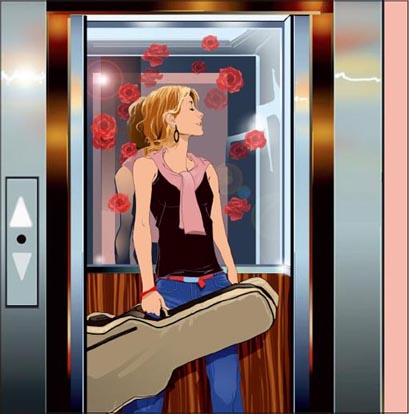
One day Anna comes home and finds Gran at the door of the building with a lot of bags.
'Oh, can I help you?' she says. 'Can I carry something?'
'Thank you very much,' says Gran.
At the apartment, Gran says, 'Come in, dear. Would you like some coffee?'
'Oh – that's very nice of you,' says Anna. 'I'm new here, and I don't know anybody in the building.'
'What do you do?' asks Gran.
'I'm a music student,' says Anna.
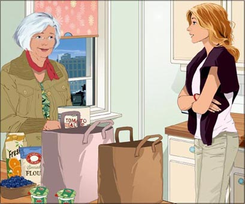
Gran brings some coffee into the room.
'These are lovely apartments, aren't they?' says Anna.
'Oh yes,' says Gran. 'I like it here very much.' She tells Anna about her apartment, and about Charlton. Later Anna gets up.
'I must go now,' she says. 'Thank you for the coffee.'
'Goodbye, dear,' says Gran, and Anna goes out.
'What a nice girl,' Gran thinks. 'But – just a minute. A music student – perhaps she's the girl with the guitar! I can ask her over one day when Will comes. No I can't – I don't know the number of her apartment!'
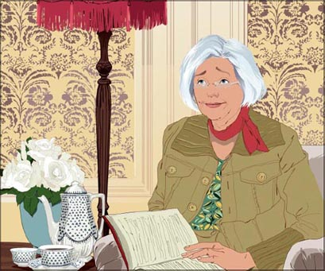
Later that week Vicki talks to Anna. 'I'm having a party on Saturday,' she says. 'Can you come?'
'Yes, of course!' says Anna. 'Your parties are always wonderful.'
Vicki calls her brother. 'Come to my party on Saturday, James,' she says, 'and bring some friends.'
On Saturday, James and his friends arrive at Vicki's house.
'Hi, Vicki,' says James. 'Meet my friends. This is Tom, and Daniel – and Will.'

Just then, Vicki's phone rings.
'I'm sorry, Vicki,' says Anna. 'I can't come to your party, because I'm not feeling well.'
'Oh Anna! I'm sorry, too,' says Vicki. 'Well, stay in bed, and get better soon.'
Vicki's party is wonderful. Will meets Natalie, and Jane, and Katie. But he does not meet Anna.
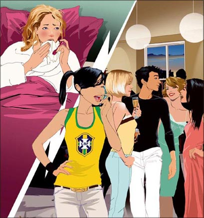
3 Red roses
3
Red roses
Now it's October. Will visits his gran, but he does not see Anna. He walks along the corridor, but he does not hear a guitar.
'Where is she?' he thinks.
Anna visits her family for a week, then she comes back to her apartment. She looks for Will, but she does not see him.
'There are lots of men!' says Vicki, but Anna cannot forget Will.
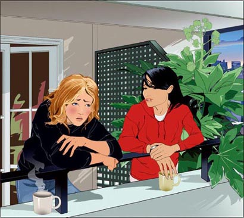
Then Gran goes to hospital for two weeks. One day Will visits her there.
'How are you today, Gran?' he asks.
'Very well thank you, dear. I'm going home on Friday.'
'That's good,' says Will. 'Perhaps I can get some things for you on Thursday and take them to the apartment.'
'That's very nice of you, Will,' says Gran.
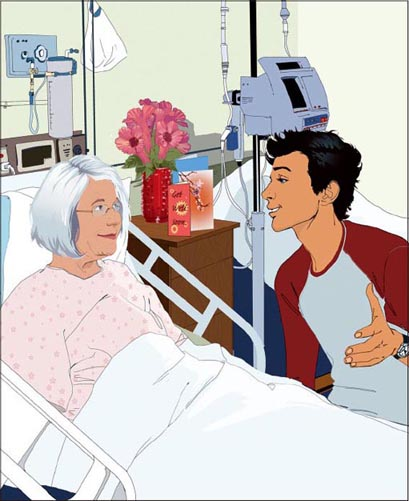
After work on Thursday Will goes to the shops and gets some things for Gran. He gets some roses, too, and he puts everything in his car.
Suddenly it begins to rain. Will is getting into his car when he sees his friend Tom.
'Where are you going, Tom?' says Will.
'Home – to Eastfield.'
'I'm going to my gran's apartment in Charlton, so I can take you to Eastfield first.'
'Can you take my friend Anna, too? She's going to Charlton.'
'Yes of course,' says Will.
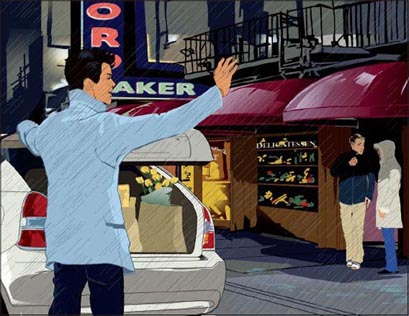
Tom and Anna get into Will's car.
'Thanks, Will,' says Tom. 'It's not a very nice night!'
'That's all right, Tom,' says Will. He drives Tom home, and then he says to Anna, 'Where are you going, Anna?'
'I'm going to Grandview Apartments. It's on Park Road.'
'That's funny,' says Will. 'I'm going to Grandview Apartments.'
'Is it her?' he thinks. 'The girl with the guitar?' He looks in the mirror, but he can't see her face very well.
'Can I smell roses?' thinks Anna. 'Is it him – the man with the roses?'
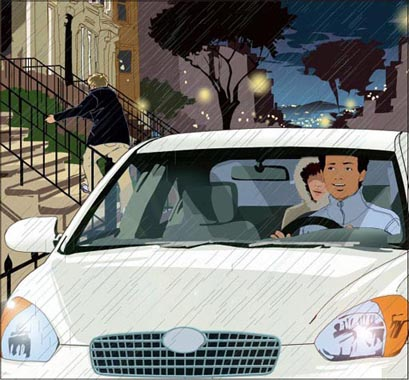
Then they are outside the apartment building. They get out of the car, and then they begin to talk at the same time.
'Oh! It's you!'
'You play the guitar!'
'And you come here with roses!'
'Yes – I always bring roses to my gran.'
'His gran!' thinks Anna. 'Not his wife, not his girlfriend.'
'She's coming home from hospital tomorrow, so I'm taking some things to her apartment,' says Will.
'Can I... would you like some help?' says Anna.
'Yes please!' says Will.
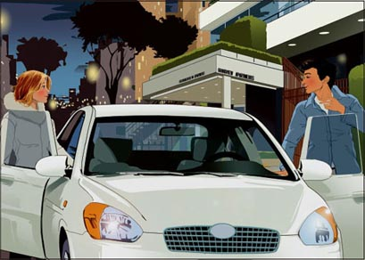
They go up to Gran's apartment. Will puts things away, and Anna puts the roses in a vase.
'There – aren't they lovely!' she says. 'I like roses. They smell wonderful.'
'Thank you for your help, Anna,' says Will.
'That's all right,' Anna says. 'Look – would you like to come up to my apartment for coffee?'
'I'd like to very much,' says Will.
He smiles, and she smiles. They go upstairs.
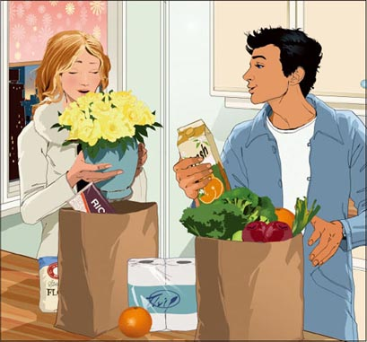
On Friday Gran comes home. Will goes to see her. He is carrying a bunch of red roses.
'That's a big smile, Will!' says Gran. 'Red roses – don't they say "Red roses for love"?'
'Well, Gran...' says Will.
Ten minutes later, Will comes out of Gran's apartment and goes upstairs. He's carrying a bunch of red roses.
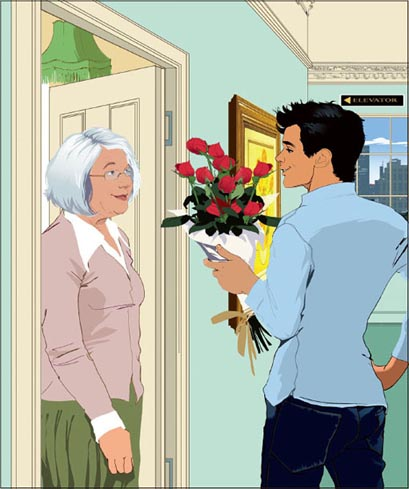
Gran goes out onto the balcony and sits down in the sun. She can hear a guitar. Then it stops.
Gran hears Will's voice, and Anna's voice. Then Anna laughs.
Gran smiles. She can smell roses – beautiful red roses, in the sun, outside on a balcony.
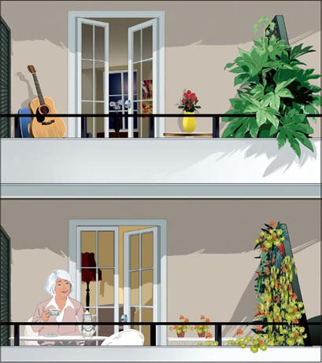
GLOSSARY 词汇表
GLOSSARY
词汇表
a bit a small amount, not much 一点儿；稍微
along prep. from one end of something to the other end 沿着…（移动）
anybody pron. any person 任何人；无论谁
apartment n. a group of rooms for living in 公寓套房
around adv. in different places 在四周；向各处
dear n. you say this when you speak to someone you like or love 亲爱的；宝贝
funny adj. strange 有趣的，奇怪的
girlfriend n. a girl who is a man's special friend 女朋友
gran n. grandmother – the mother of your father or mother 〈口语〉奶奶，外婆
inside adv. into a room or building 在里面，在室内
lovely adj. very nice 可爱的；美好的
music n. what you make when you sing, or play the piano, guitar, etc 音乐
outside adv. out of a room or building 在外面，在室外
ring v. make a sound like a bell (e.g. a telephone rings) （电话等）鸣响
smell v. notice something with your nose 闻，嗅
upstairs adv. to or in the higher part of a building 向楼上；在楼上
voice n. you speak and sing with your voice （人的）说话声，嗓音
ACTIVITIES 阅读练习
Red Roses
ACTIVITIES
阅读练习
ACTIVITIES
Before Reading
1 Look at the front and back covers of the book and choose the correct endings for these sentences.
1) This story is about...
a □ work.
b □ love.
c □ families.
2) Roses are...
a □ people.
b □ buildings.
c □ flowers.
2 Guess what happens. In the story...
1) Anna and Will never meet.
Yes □／No □
2) Will meets Vicki.
Yes □／No □
3) Will takes Anna home in his car.
Yes □／No □
4) Will meets Anna at work.
Yes □／No □
5) Anna sees Will on TV.
Yes □／No □
6) Anna meets Will's grandmother.
Yes □／No □
ACTIVITIES
While Reading
1 Read the first half of Chapter 1, then answer these questions.
1) What does Anna play?
2) Who is coming to her apartment?
3) What colour are Will's roses?
4) Who is Anna thinking about?
2 Read the second half of Chapter 1. Are these sentences true (T) or false (F)?
1) Anna is not listening to Vicki.
2) Will always takes apples to Gran.
3) Gran makes coffee for Will.
4) Will talks to Gran about Anna.
5) Anna sees Will outside the apartment building when she comes home.
3 Read the first half of Chapter 2, then answer the questions.
Who...
1) ... says: 'It's a lovely day'?
2) ... runs out of the apartment?
3) ... closes the door to the balcony?
4) ... says: 'Are you all right, dear?'?
5) ... can smell roses in the elevator?
4 Read the second half of Chapter 2, then answer these questions.
1) How does Anna help Gran?
2) What is Vicki doing on Saturday?
3) Why does Anna stay at home on Saturday?
4) Who does Will meet at the party?
5 Read the first half of Chapter 3, then match the sentence halves to make four complete sentences.
1) Will walks along the corridor...
2) Anna visits her family for a week...
3) Will is getting into his car...
4) Will is going to Charlton...
a then she comes back to her apartment.
b so he can take Tom to Eastfield first.
c but he does not hear a guitar.
d when he sees his friend Tom.
6 Read the second half of Chapter 3. Are these sentences true (T) or false (F)?
1) Will takes the roses to his mother.
2) Anna puts the roses in a vase.
3) Anna asks Will to her apartment.
4) Will has a bunch of red roses for Gran.
5) Gran laughs when she smells the red roses.
ACTIVITIES
After Reading
1 What do you know about Anna? Write a description using these words:
live / Grandview Apartments / Charlton
music student / play guitar
friend / called Vicki
like / help people
like parties / roses
2 Put these sentences in the correct order. Number them 1–10.
a □ Tom and Anna get into Will's car.
b □ 'Is she the girl with the guitar?' Will thinks.
c □ Will goes shopping for Gran.
d □ They arrive at the apartment building and get out of the car.
e □ Then they go to Anna's apartment.
f □ Will drives Tom home.
g □ Anna says, 'I'm going to Grandview Apartments.'
h □ Anna helps Will with the roses.
i □ Then Will and Anna meet!
j □ Then he sees his friend Tom.
3 Who says this? Who do they say it to?
1) 'I'm thinking about a bunch of roses.'
2) 'That's a guitar. Where's it coming from?'
3) 'Can I carry something?'
4) 'Come to my party on Saturday.'
5) 'Stay in bed, and get better soon.'
6) 'Can you take my friend Anna, too?'
4 Complete this summary of the story. Use these words:
apartment because hears home
do not nice outside party rain red
One day Anna sees Will with a bunch of roses outside her ___________ building. She thinks, 'He's ___________.' Will likes Anna too, but they ___________ meet. Then Will ___________ a guitar. Is it Anna's guitar? He goes ___________, but he cannot see it.
Anna's friend Vicki asks Anna and Will to her ___________, but Anna cannot go ___________ she is not well. Then one afternoon Will sees his friend Tom in the ___________. He takes Tom and Tom's friend Anna ___________. This time, Will and Anna meet. The next day, Will takes a bunch of roses to the apartment building. They are ___________ roses, for Anna.
TRANSLATION 参考译文
TRANSLATION 参考译文
Red Roses
红红的玫瑰
时值八月，安娜正在她新公寓的阳台上弹吉他。“我喜欢这里。”她想。
这时，她的手机响了。是她的朋友薇姬打来的。
“我正过来呢，安娜。是在查尔顿的美景公寓，对吧？”
“对，一会儿见。”
安娜拿上吉他，出了公寓。她坐电梯下楼，走到大门外。
安娜等在公寓大楼外。
一个年轻人沿着街道走来，手里拿着一束白玫瑰。
安娜看了看那束花。“多漂亮的玫瑰！”她想。接着，她又看了看那年轻人。“他看起来也不错！”她想。
年轻人望着她，笑了笑，安娜的脸一下子泛起了红晕。
威尔正在大街上走着，看到了一位提着吉他的姑娘。
“唔，吉他！”他想，“我得多练练我的吉他了。”
接着他又看了看那位姑娘。
“她很不错！”他想，于是朝她笑了笑。
安娜的脸一红，移开了目光。威尔走进了美景公寓。
就在这时，薇姬开车到了。
“嗨，安娜，”她说，“你还好吧？你的脸有点儿红。出了什么事吗？”
“哦，呃，没什么。”安娜说。
她们驾车离开了。薇姬跟安娜说话，可安娜一直在想那个年轻人。
“他是谁？”她想，“他住在那个楼里吗？那些玫瑰是送给谁的？他的妻子？他的女朋友？还是他母亲？”
“安娜？你在听吗？”薇姬说。
“哦！对不起，薇姬。”安娜说。她的脸现在更红了。
“你在想什么呢？”薇姬说，“跟我说说！”
“呃，我在想一束玫瑰，”安娜说，“还有一个男人。”
“啊哈！他是谁？”薇姬问。
“我不知道。”安娜说。
“可是我想知道。”她想。
威尔到了他奶奶的公寓。
“你好，亲爱的。”她说，“哦，你是个好孩子，总是带玫瑰花给我。”
“当然啦。”威尔说。
奶奶给威尔冲了一些咖啡。她问了他一个问题，但是威尔没有回答。
“威尔，你在听吗？你在想事情，对吧？想什么呢？”
“哦，对不起，奶奶。是——不是什么重要的事。”
晚些时候，威尔跟奶奶告别，然后开车走了。
在车里他想起了那个拿着吉他的姑娘。
“她住在哪儿？”他想，“她会不会就住在那栋公寓楼的某一间里？或者她在那儿有朋友？我怎样才能认识她呢？她是谁？”
五分钟后，安娜和薇姬的车到了公寓楼外。
“晚安，薇姬。”安娜说。
“快点儿进去吧。”薇姬说，“想想看，你走出电梯，正有个年轻人捧着玫瑰站在那儿。他还说——”
“哦，别说了。”安娜笑了起来，“明天见。”
时至九月，威尔又来看望奶奶。
“今天天气不错，威尔。”她说，“我们到阳台上喝咖啡吧。”
威尔正和奶奶坐在阳台上晒太阳，忽然听到了吉他声。
“听！”他说，“那是吉他声。是从哪里传来的？”他站起来四处张望，但是看不到吉他的影子。
“抱歉，奶奶。”他说，“我，呃，很快回来！”说着他就跑出了房间。
威尔沿着楼道一路跑。那吉他在哪儿？又是谁在弹奏？
他停在一间房的门口听了听，没有动静。
“或许是在外面，”他想，“或许她在阳台上。”
于是他坐电梯下楼，到了外面。
楼上，安娜拿着吉他走进屋子，关上了阳台门。
“今天就弹到这儿吧。”她想。
威尔望向所有的阳台，但是既看不到也听不到有人弹吉他。
他回到奶奶的房间。
“你还好吧，亲爱的？”她说。
“是的，谢谢，奶奶，”威尔说，“就是，哦，这不重要。好吧，这挺重要的，但是……”
威尔告诉了奶奶那个弹吉他的姑娘的事。
一个星期后，安娜正往家走。她看到公寓楼旁有个年轻人，拿着一束玫瑰——今天是粉色的玫瑰。但是他没往这边看，也没有看到她。
安娜加快了脚步。但是等她赶到楼里，那里已经没有人了。
她走进电梯，里面没有人，但她能闻到玫瑰的香气——是美丽的粉色玫瑰。
一天，安娜回家的时候，在楼门口看到一位老太太拎着很多袋子。
“哦，要我帮忙吗？”她说，“我来帮您拎一些吧？”
“非常感谢。”老太太说。
到了房间门口，老太太说：“进来吧，亲爱的。你要不要来点儿咖啡？”
“哦，您太客气了。”安娜说，“我是新搬来的，跟楼里的人都不认识。”
“你是做什么的？”老太太问。
“我是学音乐的学生。”安娜说。
老太太端来了咖啡。
“这里的公寓很不错，是吧？”安娜说。
“哦，是的。”老太太说，“我很喜欢这儿。”她跟安娜聊起了自己的公寓，又说了些查尔顿的事。过了一会儿，安娜站起身来。
“我得走了。”她说，“谢谢您的咖啡。”
“再见，亲爱的。”老太太说，安娜出门离去。
“多好的姑娘，”老太太想，“不过，等等。学音乐的学生——或许她就是那个弹吉他的姑娘！等哪天威尔来的时候，我可以请她过来。不行，我不知道她的房号！”
快到周末了，薇姬跟安娜聊天。“我周六要开个派对。”她说，“你能来吗？”
“好啊，当然了！”安娜说，“你的派对总是很棒。”
薇姬给她的弟弟打电话。“周六来我的派对吧，詹姆斯。”她说，“带些朋友过来。”
星期六，詹姆斯和他的朋友们到了薇姬家。
“嗨，薇姬，”詹姆斯说，“来认识一下我的朋友们。这是汤姆、丹尼尔，还有威尔。”
这个时候，薇姬的手机响了。
“对不起，薇姬，”安娜说，“我不能去你的派对了，我不太舒服。”
“哦，安娜！真不幸。”薇姬说，“嗯，卧床休息，快点儿好起来。”
薇姬的派对很棒。威尔见到了娜塔莉，见到了简，还有凯蒂。但是他没见到安娜。
时间进入十月。威尔去看望奶奶，可是没见到安娜。他走在楼道里，但是没有听到吉他声。
“她在哪儿？”他想。
安娜回家探亲一个星期，然后回到公寓。她也在寻找威尔，但没见到他。
“男人有的是！”薇姬说，可是安娜对威尔念念不忘。
后来，威尔的奶奶住了两个星期的医院。一天，威尔去医院看望她。
“您今天怎么样，奶奶？”他问。
“很好，谢谢，亲爱的。我星期五就回家了。”
“那好啊，”威尔说，“或许我星期四可以买点儿东西给您送到公寓去。”
“你真好，威尔。”奶奶说。
星期四下班后，威尔到商店给奶奶买了些东西。他还买了玫瑰，然后把所有东西放到了车上。
天突然下起了雨。威尔正要上车时，看到了他的朋友汤姆。
“你要去哪儿，汤姆？”威尔问。
“回家——去伊斯特菲尔德。”
“我要去查尔顿我奶奶家，可以先送你去伊斯特菲尔德。”
“你能一道儿送送我的朋友安娜吗？她要去查尔顿。”
“当然可以。”威尔说。
汤姆和安娜上了威尔的车。
“谢谢，威尔。”汤姆说，“今晚天气真不好！”
“别客气，汤姆。”威尔说。他开车把汤姆送回家，然后对安娜说：“你去哪儿，安娜？”
“我去美景公寓，在帕克路上。”
“真巧，”威尔说，“我也去美景公寓。”
“是她吗？”他想，“是那个弹吉他的姑娘吗？”他看了看后视镜，但看不清她的脸。
“我闻到的是玫瑰花香吗？”安娜想，“是他吗——那个拿玫瑰的人？”
他们到了公寓楼外，一下车就同时开了口。
“哦，是你！”
“你弹吉他！”
“你带着玫瑰花来这儿的！”
“是的，我总是给我奶奶带玫瑰花。”
“他的奶奶！”安娜想，“不是他妻子，也不是他女朋友。”
“她明天就要出院回家，所以我来她家送些东西。”威尔说。
“我能……你需要帮忙吗？”安娜问。
“是的，劳驾！”威尔说。
他们上楼来到老奶奶的房间。威尔把东西收拾好，安娜把玫瑰插到花瓶里。
“好了。它们真漂亮！”她说，“我喜欢玫瑰，闻起来很香。”
“谢谢你帮忙，安娜。”威尔说。
“不客气。”安娜说，“哎，你想不想上楼到我的公寓去喝杯咖啡？”
“我很乐意。”威尔说。
他笑了，她也笑了。他们一起上了楼。
星期五，奶奶回到了家。威尔去看她。他拿着一束红玫瑰。
“你笑得真开心，威尔！”奶奶说，“红玫瑰——不是说‘红玫瑰代表爱情’吗？”
“嗯，奶奶……”威尔说。
十分钟后，威尔出了奶奶的房间，来到楼上。他拿着一束红玫瑰。
威尔的奶奶走出房间，坐在阳台上晒太阳。她听到了一阵吉他声，接着又停了。
她听到了威尔的声音，还有安娜的声音。接着传来安娜的笑声。
奶奶笑了。她能闻到玫瑰的香味——美丽的红玫瑰，正摆在阳台上，沐浴在阳光里。
封底
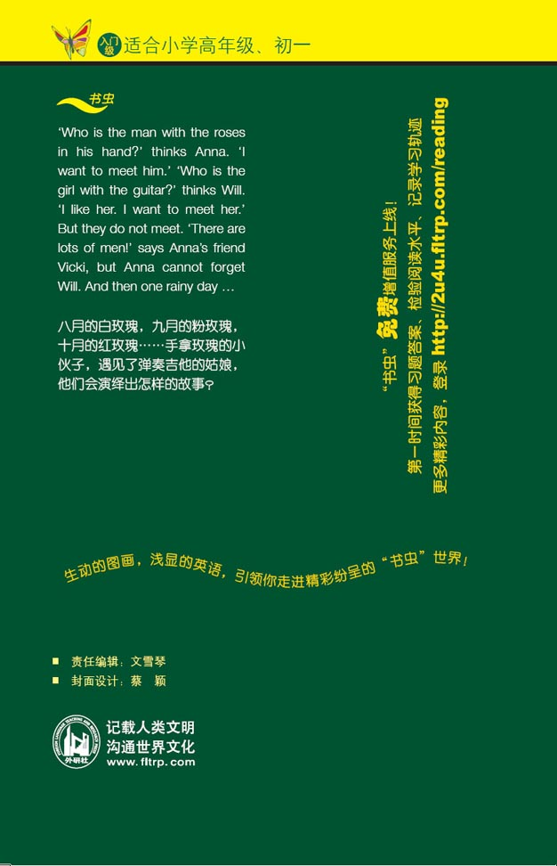